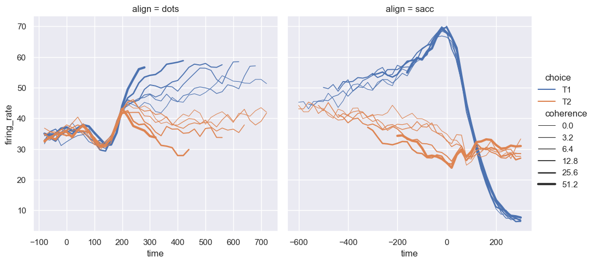
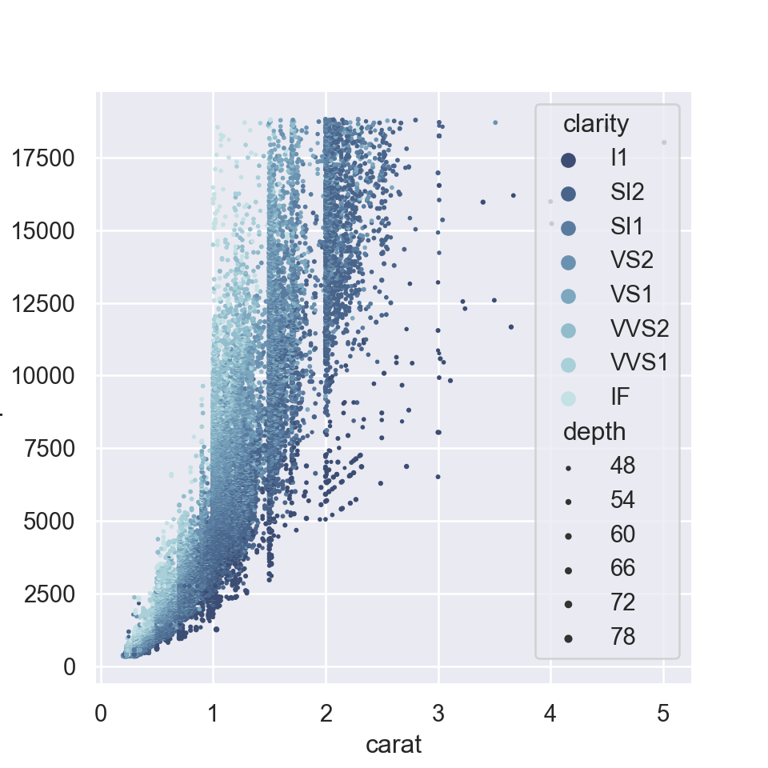

the_world_is_flat = True
if the_world_is_flat:
print("Be careful not to fall off!")Be careful not to fall off!March 17, 2023
This section contains my study notes on the official python tutorial.
Here is a link to the PEP 8 style guide.
Also it might be worthwile to look at the official language definition.
4 builtin data structures: * Lists - x = [1, 2, 3] * Tuples - x = 1, 2, 3 * Sets - x = {1, 2, 3} * Dictionaries x = {'a': 1, 'b': 2, 'c': 3}
TrueFalse['jack', 'jan-eggerik']True{'a': 1, 'b': 2}'b'{1: 'a', 2: 'b', 'a': 3}['jack', 'jan-eggerik']import seaborn as sns
import matplotlib as mp
import matplotlib.pyplot as plt
# Apply the default theme
sns.set_theme()
# Load an example dataset
dots = sns.load_dataset("dots")
sns.set(rc={'figure.figsize':(10, 3)})
sns.relplot(
data=dots, kind="line",
x="time", y="firing_rate", col="align", # style = "choice",
hue="choice", size="coherence",
facet_kws=dict(sharex=False)
)
# sns.set_theme(style="whitegrid")
x = (5,5)
sns.set(rc={'figure.figsize': x})
# Load the example diamonds dataset
diamonds = sns.load_dataset("diamonds")
# Draw a scatter plot while assigning point colors and sizes to different
# variables in the dataset
f, ax = plt.subplots(figsize=x)
sns.despine(f, left=True, bottom=True)
clarity_ranking = ["I1", "SI2", "SI1", "VS2", "VS1", "VVS2", "VVS1", "IF"]
sns.scatterplot(x="carat", y="price",
hue="clarity", size="depth",
palette="ch:r=-.2,d=.3_r",
hue_order=clarity_ranking,
sizes=(1, 8), linewidth=0,
data=diamonds, ax=ax)
[1] "/Users/seb/Library/r-miniconda-arm64/envs/sbloggel/bin/python"